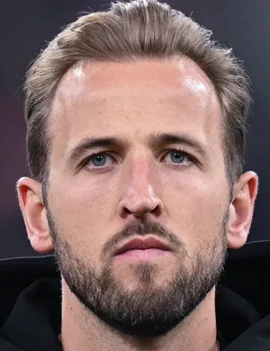

Erling Haaland
Erling Braut Haaland nascido Håland; pronúncia IPA: Leeds, 21 de julho de 2000 é um futebolista norueguês
nascido no Reino Unido que atua como centroavante. Atualmente joga pelo Manchester City e pela Seleção
É
considerado um dos melhores atacantes do futebol mundial. Em 2020, ganhou o prêmio Golden Boy, dado ao
melhor jogador com idade abaixo de 21 anos atuando na Europa.
ver a biografia dele
caracteristicas
- alto
- joga muito bem
- joga no Manchester City
- norueguês
- ganhou o prêmio Golden Boy
Jude Bellingham
Bellingham ingressou no Birmingham City como
Em 6 de agosto de 2019, ele fez sua estreia profissional,
aos 16 anos e 38 dias, sendo o jogador mais novo da história a atuar pelo clube.[5] Ao todo, foram 44
partidas, com quatro gols e três assistências.
 ver a biografia dele
ver a biografia dele
- Nome completo Jude Victor William Bellingham
- Data de nascimento 29 de junho de 2003
- Bellingham ingressou no Birmingham City aos oito anos
- Em março de 2019, ele já tinha três gols em dez aparições na equipe de desenvolvimento
- Clube atual Real Madrid
Kane
Kane fez história com sua seleção ao ser o artilheiro da Copa do Mundo FIFA de 2018 e junto com a Seleção
Inglesa
chegar a semifinal desta Copa,
algo que não conseguiam havia 28 anos. Em março de 2023, se tornou o
maior
artilheiro da história de sua seleção, superando Wayne Rooney.[5]

ver a biografia dele
- Nome completo Harry Edward Kane
- Data de nascimento 28 de julho de 1993 30 anos
- O jogador marcou época no Tottenham, tendo ficado 19 anos
- Atualmente é o maior artilheiro da equipe londrina
- Kane passou por diversos clubes da Inglaterra durante sua formação, incluindo o Arsenal, maior rival do
clube que anos mais tarde o revelaria
Kylian Mbappe
Kylian Mbappé Lottin é um futebolista francês que atua como atacante.
Atualmente joga pelo Paris
Saint-Germain e pela Seleção Francesa. Considerado um dos melhores jogadores da última década, ele é
conhecido
pelo seus dribles e sua velocidade explosiva.
.jpg) ver a biografia dele
ver a biografia dele
caracteristicas
- corre muito
- joga pelo Paris Saint-Germain
- francês
- Considerado um dos melhores jogadores da última década
- ele é conhecido pelo seus dribles e sua velocidade explosiva.